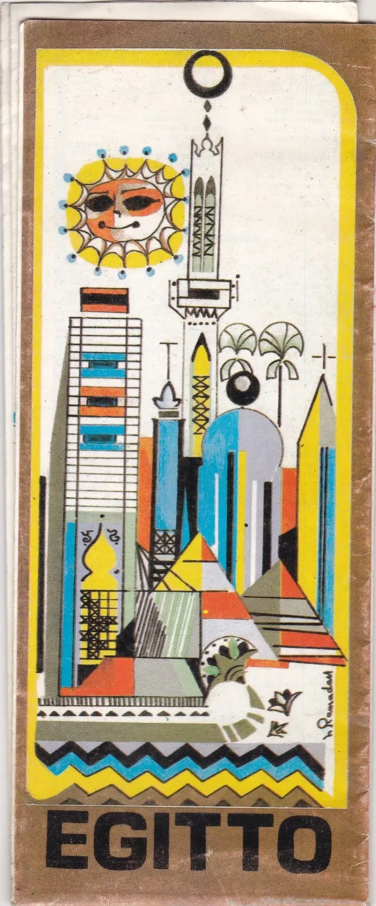
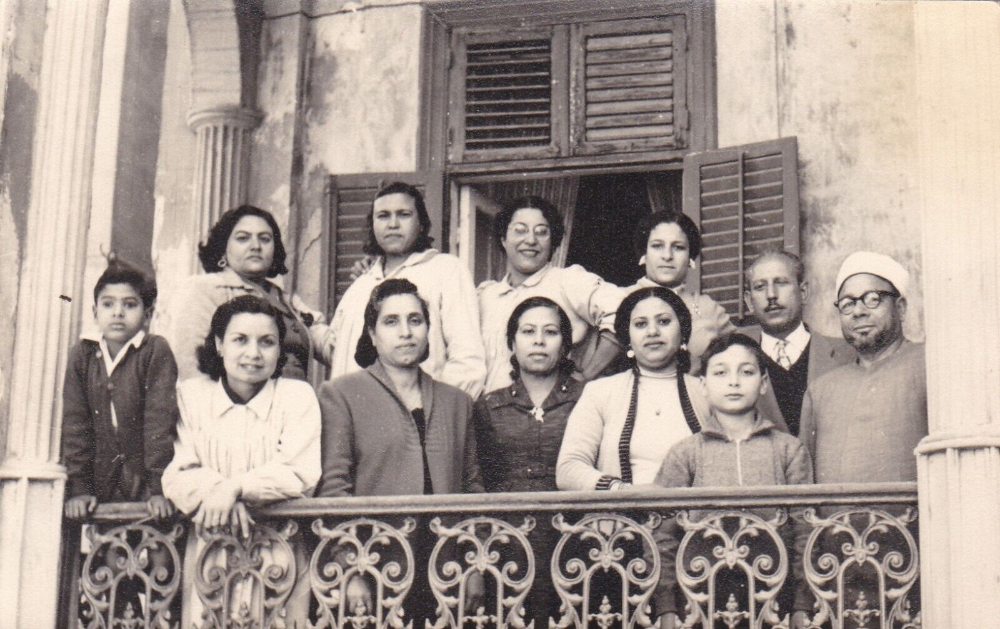
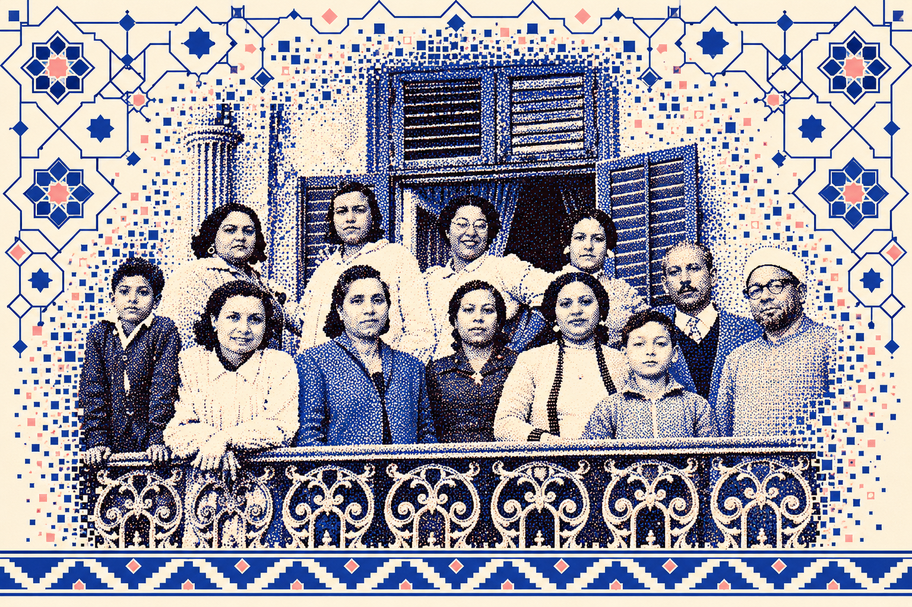
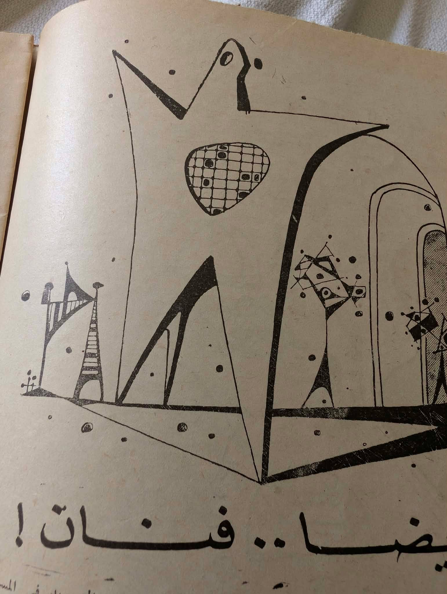
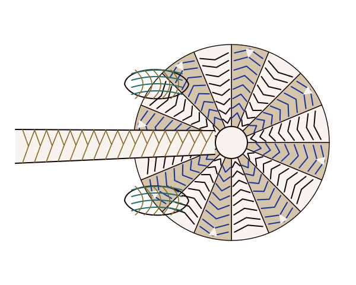
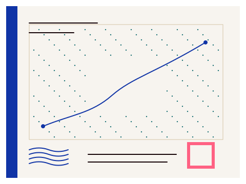
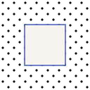
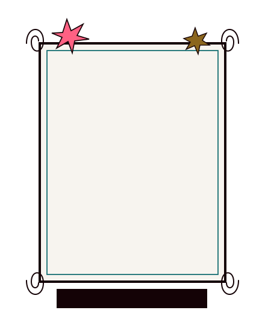
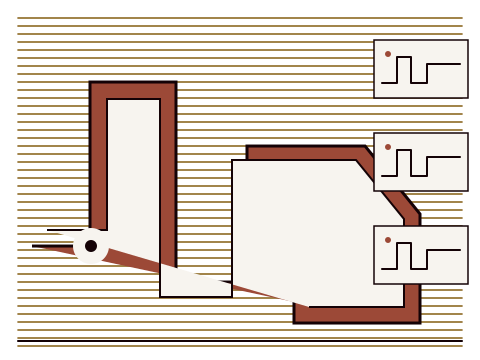
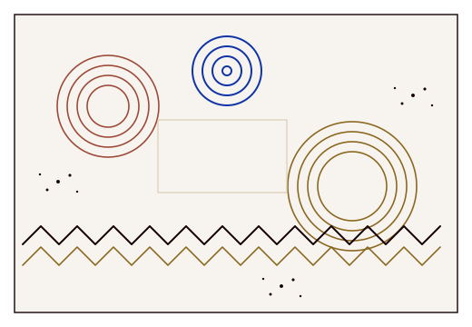

GMD / WEB COMPONENTS / DRAFTA system for
A system for
connected culture.
Thirty component families with live local states. Built on the Tavus paper, ink, Nile, pink, square rules and hard depth; extended through source-led image and Arabic specimens.
GMD.
EDITORIAL ↔ WORKSPACE
EN ↔ AR · 375 ↔ DESKTOP
EN ↔ AR · 375 ↔ DESKTOP
01 / FOUNDATIONMaterial before
Material before
components.
Plain surfaces carry dense work. Texture frames an opening or close; a sourced pattern never replaces a field label.


Contemporary construction studies derived from visible composition cues; no source object is traced and no seamless tiling is claimed. Read asset recipes ↗
PAPERINKNILEPINKSAND
LATIN / PERFECTLY NINETIESA record can open a world.
Suisse Intl holds the body. FK Raster names the utility layer.
ARABIC / AMIRI + PLEX · PROVISIONALتفتح الوثيقة عالماً من الروابط
تستخدم الواجهة العربية خطًا مقترحًا للمراجعة، مع بديل Noto المحلي.
FILM ACCENT / RAKKAS · SHORT DISPLAY ONLYليالي السينما
Expressive title study. Body copy and controls remain in IBM Plex Sans Arabic.
02 / CONTROLSAction has
Action has
a visible state.
Default, hover, focus, pressed, disabled and busy states share one edge grammar.
Use a true disabled state for unavailable actions; a busy button retains its label and announces progress.
Record actions
The icon is never the only accessible name. Disclosure closes on Escape or outside click.
One record, several views.
Keep the reading frame stable while the content changes.
Relationships stay visible.
People, works and places connect the source object.
Show the trail.
Separate source text, uncertainty and rights.
What is a source trail?
The original file, its description, evidence and any later transformation are linked explicitly.
When is a record reusable?
Only after rights and intended use have been reviewed. This specimen grants no license.
Switches the major content specimen and document direction. This draft still needs a full editorial translation pass.
03 / FORMSFields that explain
Fields that explain
themselves.
An explicit label, help, error, required state and local confirmation are part of the component.
04 / DISCOVERYFind a thread.
Find a thread.
Keep the context.
One local record set drives search, facets, sorting, card/list/table views, paging and export.
No matching records.
Try another title or family.
SIX LOCAL EXAMPLE RECORDS · EXPORT CONTAINS THE CURRENT FILTERED PAGE ONLY · SOURCE AND LICENSE FIELDS ARE REVIEW PLACEHOLDERS
05 / MEDIASee the object.
See the object.
Read the source.
Editorial crops can invite. Full-object views, captions and rights status keep the record useful.

EG-005 / ORIGINAL PRINTOriginal supplied image. Metadata and rights are not verified.
Contemporary editorial treatment. The original remains untouched.
IMAGE UNAVAILABLE
Fallback keeps the caption and source ID visible.



06 / FEEDBACKSay what happened.
Say what happened.
Offer a next step.
Loading, error and confirmation are deliberate states, not blank gaps.
This is an example failure state, with a clear retry action.
The native dialog shows source and rights context and returns focus to its trigger.
Announce a local action while the page remains available.
07 / PUBLIC SHELLA useful ending
A useful ending
is part of the system.
A ruled directory gives every product the same orientation, then an expressive Nile field closes the page.
GMD.
08 / SOURCE-INFORMED GEOMETRYA family of forms.
A family of forms.
A visible trail.
Fifteen contemporary families, two distinct arrangements each. Every specimen names its source image IDs, application and minimum size; SVGs are downloadable.
30 SVGS / 15 FAMILIESCONTEMPORARY ADAPTATIONS · NO HISTORICAL FACSIMILEFull machine-readable manifest ↗
Skyline RailEG-005 / EG-016

Chapter/collection masthead rail; keep adjacent title area clear.
Minimum use: 200 px wide; strokes >=1.25 px.
River ChevronEG-005 / EG-010
Lotus RegisterEG-005 / EG-009

Narrow chapter spine or edge band, below content.
Minimum use: 240 px wide; strokes >=1.2 px.
Sun MedallionEG-005 / EG-004


Triangle AlternationEG-009


Poster edge register; keep off small controls.
Minimum use: 180 px wide; strokes >=1.25 px.
Source → construction
EG-009 triangular top/bottom rhythm noted in visual review.
Alternating upward/downward triangles on a fixed baseline, with optional sparse filled cells.
Faceted Portrait ApertureEG-013 / EG-036

Editorial portrait crop; full image route and focal control remain external.
Minimum use: 160 px tall; inner clear area >=55% width.
Blank Postmark RingEG-002 / EG-011


Diagram Spiral AxesEG-011

Lineage/acquisition diagram accent; pair with real labels outside SVG.
Minimum use: 110 px square; stroke >=1.3 px.
Source → construction
EG-011 envelope diagram/cancellation visual; spiral interpretation is schematic.
Explicit sampled Archimedean spiral, orthogonal axes and five unit ticks per side.
Architectural Ruled FrameEG-006 / EG-013


Chapter opener or source sheet; slots remain editable/replaced.
Minimum use: 200 x 260; content inset >=12 px.
Grille ApertureEG-036 / EG-013


Large media aperture or background panel only; do not obscure image details.
Minimum use: 160 px square; central aperture >=44 px.
Thin Scene LinesEG-009 / EG-005


Rosette BorderEG-004 / EG-005


Brick Cutstone CoursesEG-005 / EG-036


Panel background behind image only or technical section rail.
Minimum use: 200 px wide; strokes >=1.2 px.
Woven Reed FibresEG-009 / EG-005


Inkprint StippleEG-004 / EG-011


09 / NEW DRAWING STUDIESSource, drawing,
Source, drawing,
application.
Eight bounded studies bring irregular print line, open apertures and plotted fields into a disciplined Tavus layout. Each preserves a route to the photographed source.


03 / APPLICATION · EDITORIAL CHAPTERWhat connects an object to its world?
The drawing occupies a large quiet plate; a live title, description, record status and source route remain separate HTML. It is an editorial motif, not a depiction of a named building.
View in company composition ↗












These scaled previews show source-informed contemporary adaptations, not tracings or historical reconstructions. The source collection has unverified provenance and reuse rights. The regularized 16-unit halftone is the only study with a repeat claim; the others are bounded compositions.
10 / CONTRACTSA specimen is a start.
A specimen is a start.
A contract makes it travel.
The adoption map names anatomy, interaction and evidence gates. Nothing on this page is represented as a live product service.